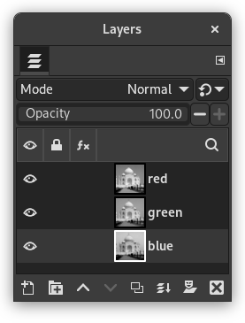
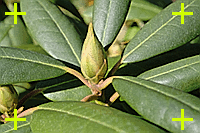
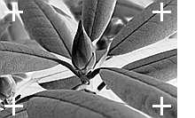

Figure 16.175. Decomposition to images (RGB)

Original image
Command “Decompose” applied (RGB decomposition) with Decompose to layers unchecked.
Figure 16.176. Decomposition to layers (RGB)
Original image.
Resulting image.

Command “Decompose” applied (RGB decomposition) with Decompose to layers checked.
This command separates the channels (RGB, HSV, CMYK, etc.) of an image into separated images or layers.
![[Note]](images/note.png)
|
Note |
|---|---|
|
This command only works on RGB images. If the image is Grayscale or Indexed, the menu entry is disabled. |
Extract Channels
Following options are described with Decompose to layers checked.
- Color model
-
- RGB
-
If the RGB option is chosen, a gray level image is created with three layers (Red, Green and Blue), and two channels (Gray and Alpha).
This function is interesting when using the Threshold tool. You can also perform operations like cutting, pasting or moving selections in a single RGB channel. You can use an extracted grayscale layer as a selection or mask by saving it in a channel (select the whole or a part of the layer, then → ).
- RGBA
-
If the RGBA option is chosen, an image is created similar to the RGB Decomposing with an additional Alpha layer filled with the transparency values of the source image. Fully transparent pixels are black and fully opaque pixels are white.
- Alpha
-
This option extracts the image transparency stored in the Alpha channel in the Channels Dialog in a separate image. The fully transparent pixels are Black the fully opaque pixels are white. The graytones are smooth transitions of the transparency in the source image.
- HSV
-
This option decomposes image into three grayscale layers, one for Hue, one for Saturation and another for Value.
Although Hue is grayscale, it does represent hues. In the color wheel, white and black are starting and arrival points and are superimposed. They represent Red color at top of the wheel. Gray intermediate levels are corresponding to intermediate hues on the wheel: dark gray to orange, mid gray to green and light gray to magenta.
Saturation and Value: White is maximum Saturation (pure color) and maximum Value (very bright). Black is minimum Saturation (white) and minimum Value (black).
- HSL
-
This option is similar to HSV. Instead of the Value, the third layer contains the image's L component.
- CMYK
-
This option decomposes an image into four grayscale layers, one for Yellow, one for Magenta, one for Cyan, and one for Black.
This option can be useful to transfer an image into printing software with CMYK capabilities.
- LAB
-
This option decomposes image into three grayscale layers, layer “L” for Luminance, layer “A” for colors between green and red, layer “B” for colors between blue and yellow.
The LAB Decomposing is a color model of the Luminance-Color family. A channel is used for the Luminosity while two other channels are used for the Colors. The LAB color model is used by Photoshop.
- LCH
-
This option decomposes image into three grayscale layers, layer “L” for Luminance, layer “C” for Chroma, and layer “H” for Hue.
The LCH Decomposing is a color model of the Luminance-Color family.
- YCbCr ITU R470, YCbCr ITU R709, YCbCr ITU R470 256, YCbCr ITU R709 256
-
In GIMP there are four YCbCr decompositions with different values. Each option decomposes an image in three grayscale layers, a layer for Luminance and the other two layers for blueness and redness.
The YCbCr color model, also called YUV, is now used for digital video (initially for PAL analog video). It's based on the idea that the human eye is most sensitive to luminosity, next to colors. The YCbCr Decomposing uses a transformation matrix and the different options are different values recommended by ITU (International Telecommunication Union) applied to the matrix.
- Decompose to layers
-
If this option is checked, a new grayscale image is created, with each layer representing one of the channels of the selected mode. If this option is unchecked, every channel is represented in its own image and clearly named in the name bar.
- Foreground as registration color
-
Example 16.1. Crop marks

Source image
Cyan component

Black component
(Magenta and Yellow components omitted.)
This option is for specialists. It is related to CMYK printing. When checked, every pixel of the current foreground color will be black in each component of the decomposed images/layers. This allows you to make crop marks visible on all channels, providing a useful reference for alignment. A thin cross printed in registration black can also be used to check whether the printing plates are lined up.